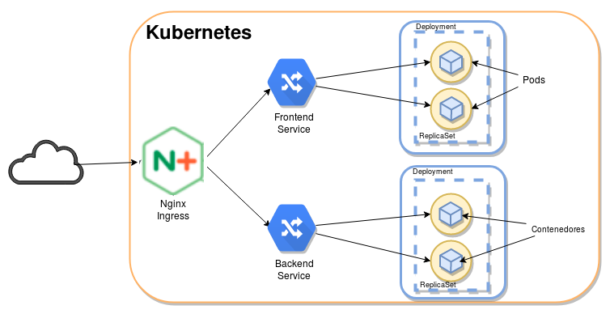

¿Qué nos aporta Kubernetes en el despliegue de aplicaciones?
Alberto Molina Coballes, José Luis Rodríguez Rodríguez and José Domingo Muñoz Rodríguez
Cloud Computing in European schools. Project: 2017-1-ES01-KA202-038471


Theme by: reveal.js
Kubernetes
Kubernetes es un orquestador de contenedores de aplicación escrito en Go y con licencia Apache-2.0, fue lanzado el 21 de julio de 2015 por Google que rápidamente se alió con la Linux Foundation para crear la Cloud Native Computing Foundation (CNCF) y dejó el proyecto en sus manos.
Gestionamos un cluster:
kubectl get nodes
NAME STATUS ROLES AGE VERSION
nodo-1 Ready master 2m32s v1.12.2
nodo-2 Ready <none> 42s v1.12.2
nodo-3 Ready <none> 42s v1.12.2
Recursos de Kubernetes

¿Qué nos aportan cada uno de los recursos de Kubernetes? (I)
- Pods: La unidad mínima de computación, permite ejecutar contenedores. Representa un conjunto de contenedores y almacenamiento compartido que comparte una única IP.
- ReplicaSet: Asegura que siempre se ejecute un número de replicas de un pod determinado. Nos proporciona las siguientes características:
- Que no haya caída del servicio
- Tolerancia a errores
- Escabilidad dinámica
¿Qué nos aportan cada uno de los recursos de Kubernetes? (II)
- Deployment: Nos permite manejar los ReplicaSets. Nos proporciona las siguientes características:
- Actualizaciones continúas
- Despliegues automáticos
-
Service: Nos permite el acceso a los pod.
-
Ingress: Nos permite implementar un proxy inverso para el acceso a los distintos servicios establecidos. Estos dos elementos nos proporcionan la siguiente funcionalidad: